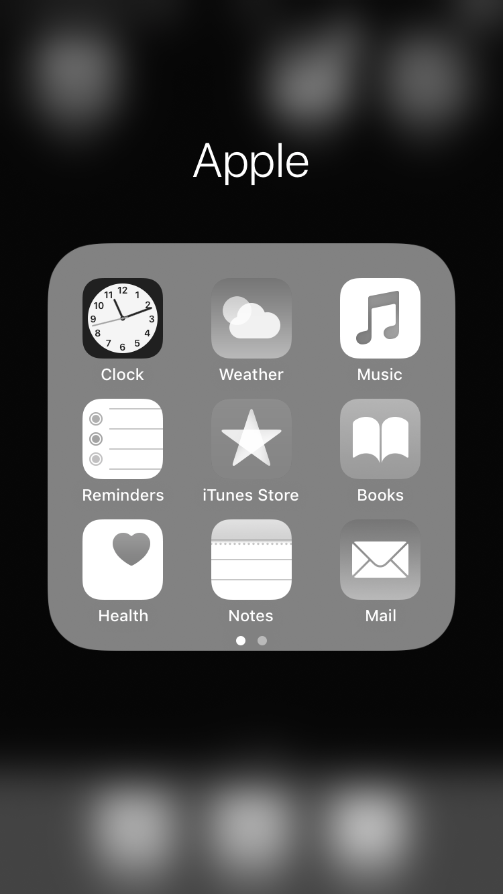
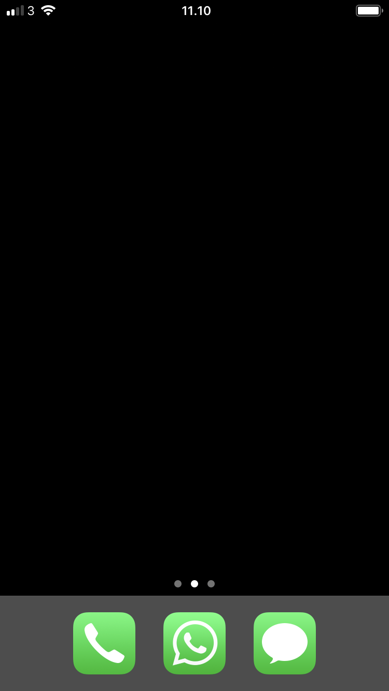
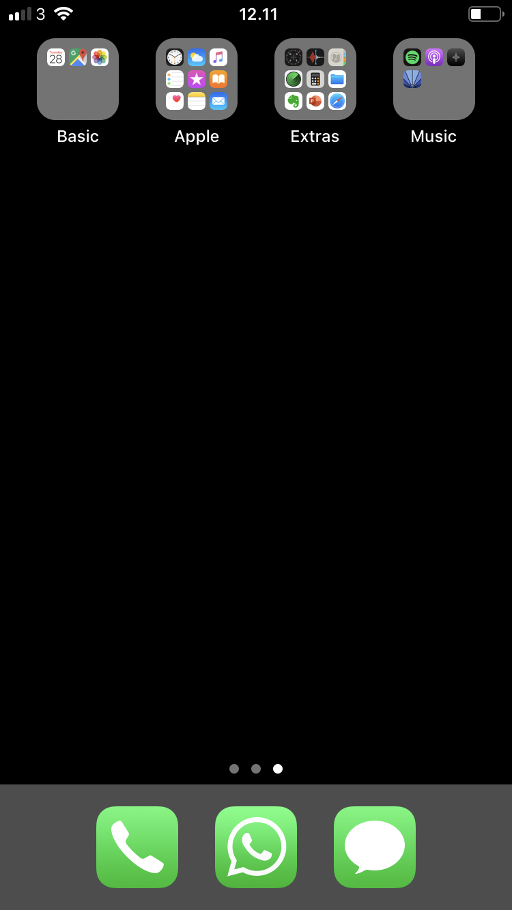
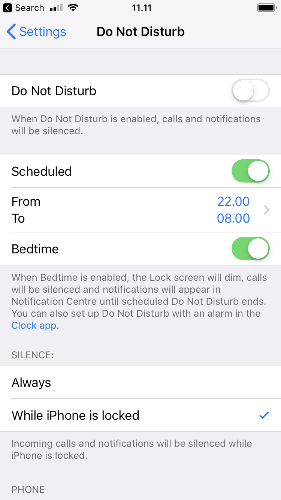
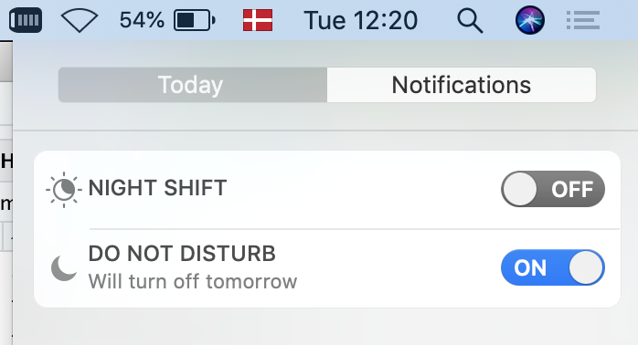

A simple way to make your smartphone less distracting is to turn it greyscale when you do not need color.

On iPhone, set a triple-tap on the Home button to toggle grey scale on and off:
Newer versions of the Android operating system may include a gray scale toggle in your phone’s quick settings.
Arrange your apps so that the home screen is minimalistic and simple, and so that the apps you’d like to use less often require a bit more effort to reach.
For example, limit your first page of apps to only apps you use for quick in-and-out tasks - move the rest of your apps, especially mindless choices, off the first page and into folders.

Schedule do not disturb, so that during certain hours (e.g. 9pm to 8am) only calls from your favorite contacts go through directly.

Wind Down on newer versions of Android also provides this feature, as well as the ability to automatically turn your phone greyscale when getting ready for bed.
Be ruthless about which apps you give the ability to send you notifications.
On iOS, go to Settings > Notifications and carefully consider which apps should be allowed to disturb you.
On a Mac, newer operating systems also include a Do Not Disturb mode, for when you need to focus without having popups about incoming email etc.:

On a laptop, try limiting the amount of information available to you to what you actually need for your task.
On Mac, one way to do this is by using full screen mode to e.g. put two tools you need side by side:
Rather than this…
… try this